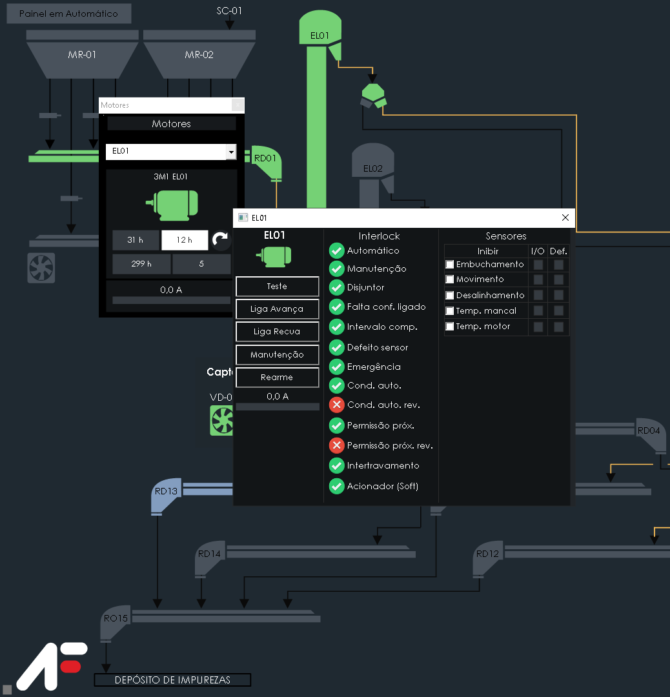

Motores
Na interface de motores é possível ajustar o setpoint de alerta do horímetro dos equipamentos, visualizar o horímetro absoluto e a corrente individual de cada um, assim o usuário pode ter uma precisão e um controle maior sobre a manutenção dos equipamentos. Você pode ter acesso a este recurso no menu principal aba “Motores”.
